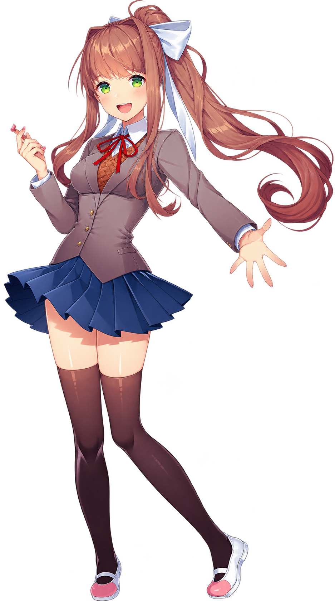
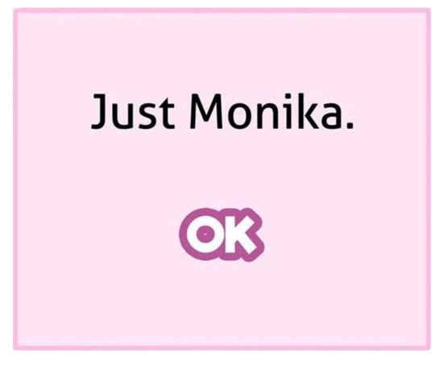
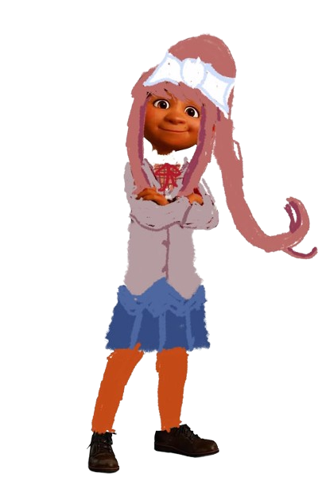
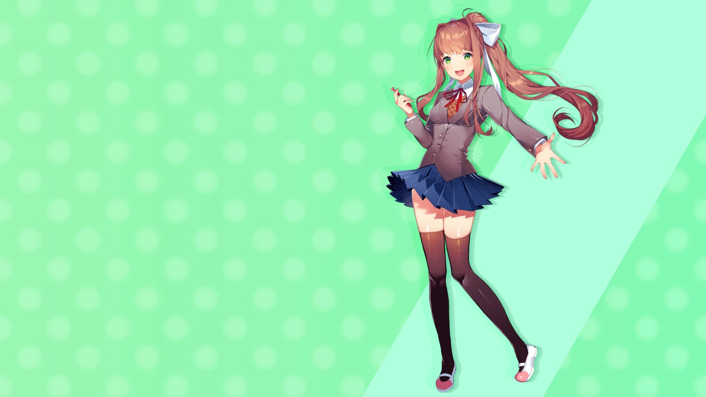

Monika


Route de Monika
Vidéo explicative
Monika est l'une des quatre membres principales du Club de littérature dans Doki Doki Literature Club!. Elle est la présidente du club et se distingue par son intelligence, sa maturité et son charisme. Elle accueille chaleureusement le protagoniste et s'efforce de faire du club un lieu agréable pour tous ses membres. Derrière cette personnalité posée et bienveillante, Monika cache pourtant un secret bien plus troublant : elle est consciente de vivre dans un jeu vidéo. Contrairement aux autres personnages, elle a accès à des connaissances que les autres n'ont pas, ce qui la plonge dans une profonde solitude. Elle sait que son « monde » n'est qu'une fiction et que le protagoniste, lui, appartient à la réalité. Au fil de l'histoire, cette prise de conscience la ronge. Monika développe des sentiments amoureux pour le protagoniste, mais comprend qu'elle ne pourra jamais être « réelle » à ses yeux. Désespérée, elle manipule alors le jeu lui-même pour éliminer les autres membres du club et s'assurer que le protagoniste ne s'intéresse qu'à elle. Ses actions deviennent de plus en plus sombres et destructrices, jusqu'à réécrire entièrement le scénario. Monika est donc un personnage important parce que son histoire explore des thèmes profonds comme la conscience de soi, la réalité, la liberté et la nature des émotions dans un monde fictif. Son parcours constitue l'élément central qui révèle au joueur que Doki Doki Literature Club! n'est pas un simple jeu de romance, mais une expérience métanarrative qui bouscule les attentes et les conventions du genre.